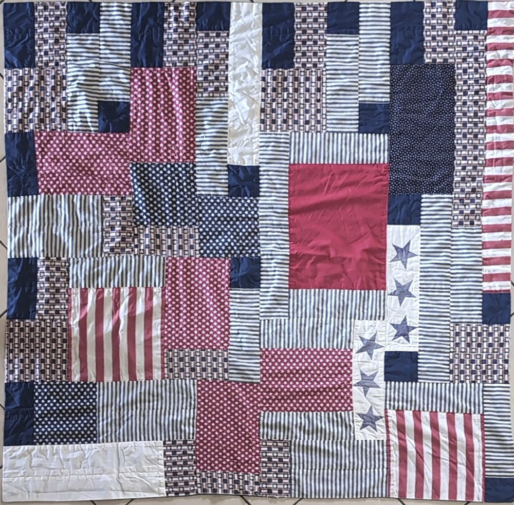
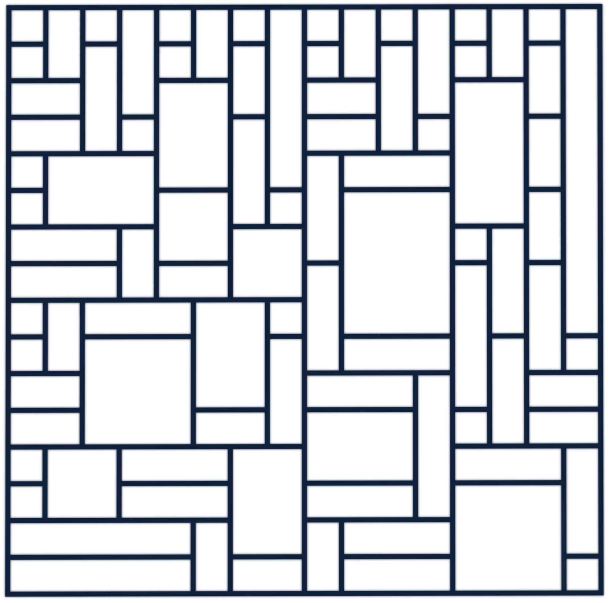

Laid flat, the quilt is exactly a 16×16 canonical
Coylean square. Every patch is one of its rectangles — and the seams
between them are the map's own lines. Fade the overlay in to watch the
pattern surface.


The cream lines are generated straight from the engine — fromUniverseExtents(north 1, west 1, south 16, east 16), the clean interior square with the seed margin and result arrows removed. Where a line drifts from a seam, that's the quilt's own handmade grace, not the map's.
◻ a single cell = one segment · ▭ bigger patches = merged rectangles · the border frames the whole square
For her — every seam a small act of love.